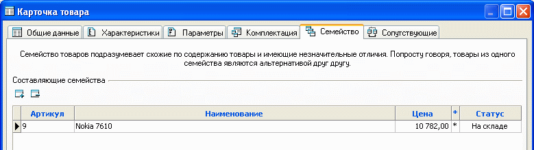
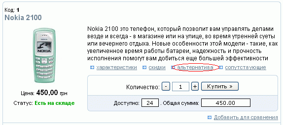
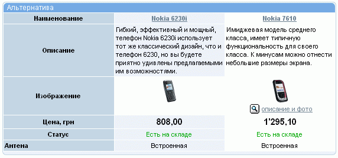

Закладка "Семейство" карточки товара позволяет группировать схожие товары. Назначение принадлежности товара А к семейству товара Б, приводит к автоматическому назначению принадлежности товара Б к семейству товара А.

Такая группировка позволяет покупателю, например, подобрать замену искомому
товару в случае его отсутствия (дизайн страниц с иллюстрациями может отличаться
от приведенных):

При этом важно подчеркнуть основные отличительные свойства каждого из товаров, входящих в семейство. Сделать это можно, используя характеристики. Тогда на страницах магазина, где будет выводиться семейство, будет отображение основных присущих этим товарам характеристик (см. менеджер характеристик), что облегчает выбор покупателем товара:

Помимо вышеуказанного, становится возможным автоматическое сравнение характеристик товаров, входящих в семейство, на странице одного из выбранных товаров.